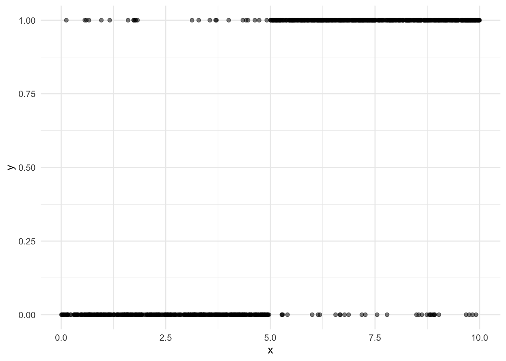
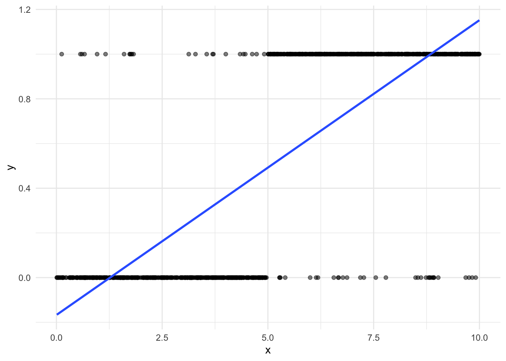
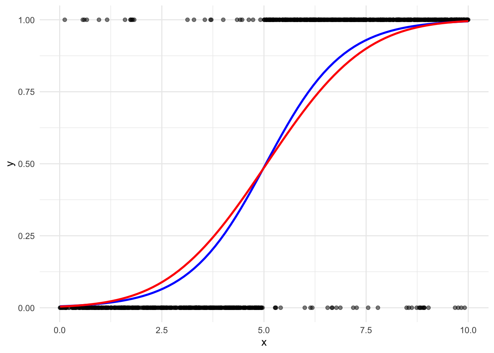

library(tidyverse)
library(gtsummary)Introduction to Binary Response Modelling
Set up
This section uses the following packages:
Introduction
We often want to better understand binary outcomes in political science.
Let’s start with simulated data to illustrate the theory. Let’s create some data:
df <- tibble(x = runif(1000, 0, 10)) |>
mutate(y = if_else(x < 5,
sample(0:1, 1000, replace = T, prob = c(0.95, 0.05)),
sample(0:1, 1000, replace = T, prob = c(0.05, 0.95))))
head(df)# A tibble: 6 × 2
x y
<dbl> <int>
1 5.87 1
2 5.50 1
3 6.70 1
4 1.18 0
5 5.62 1
6 0.394 0Now, let’s plot the relationship between our binary dependent variable, y, and our independent variable of interest, x.
ggplot(df, aes(x = x, y = y)) +
geom_point(alpha = 0.5) +
theme_minimal()
There seems to be a pretty clear relationship between y and x. When x is less than 5, you are very likely (in fact 95 percent likely) to get a y of 0. But how do we formally measure this?
When working with binary outcomes, we want to understand the probability that you will get an outcome (here, \(Y = 0\) or \(Y = 1\)) for any given value of your independent variable(s). From there, you can make an informed guess as to the outcome for given values of \(X\). For example, where the predicted probability of success is greater than 50 percent, you can predict that \(y = 1\). You can also better understand how changing the value of your independent variable impacts the likelihood that you will get a different outcome.
In our research, we may want to better understand how some policy choice will impact the likelihood of many different relevant phenomena, including that individuals will vote, countries will go to war, or democracies will become autocracies.
Linear Probability Model
Let’s start off simple. Let’s draw a straight line between these two clusters and see what we get.
ggplot(df, aes(x = x, y = y)) +
geom_point(alpha = 0.5) +
geom_smooth(method = "lm", se = F) +
theme_minimal()
This is our usual linear model:
m_lpr <- lm(y ~ x, data = df)
tbl_regression(m_lpr, intercept = T)| Characteristic | Beta | 95% CI1 | p-value |
|---|---|---|---|
| (Intercept) | -0.18 | -0.22, -0.14 | <0.001 |
| x | 0.13 | 0.13, 0.14 | <0.001 |
| 1 CI = Confidence Interval | |||
Our estimation of \(y_i\) can (and often does) take on values other than 0 or 1. This is because we can interpret the coefficients of this model as differences in the probability of success (\(y = 1\)). We can see that increasing \(x\) by one unit increases the probability that \(y = 1\) by 13.4%. We have a very high level of confidence in this, with \(p<0.001\).
Issues with LPM
We run into difficulties using LPM for prediction. First, our model can predict probabilities of success less than 0 and greater than 1. Second, and relatedly, we lose information treating these discrete outcomes (0 or 1) as continuous.
Latent Variable Approach
We can only observe one of two outcomes: \(y = 0\) (failure) or \(y = 1\) (success). The linear model provided above does not account for this very well. How can we improve this model? The latent variable approach assumes a continuous relationship exists between our observed outcome (\(Y\)) and our independent variables (\(X\)). This continuous relationship is driven by an unobserved outcome: \(Z\).
\[ z_i = X_i\beta + \epsilon_i \]
This set up is familiar to us: it’s a linear model. Critically, though, we need to understand the shape of that independent error term, \(\epsilon_i\). This defines the shape of the continuous relationship that takes us from \(y = 0\) to \(y = 1\). We have two common options to pick from: logistic or probit.
Logistic Regression
The inverse logistic function suits our needs well. First, it is bounded between outcomes of 0 and 1. Second, it allows for a varying impact of a change in \(X\) on the probability that \(Y = 1\).
Formally, the inverse logistic function is:
\[ Pr(Y = 1 | X) = logit^{-1}(X) = \frac{e^X}{1 + e^X} \]
Let’s look at the shape of the inverse logistic function:
tibble(x = seq(-10, 10, by = 0.5)) |>
mutate(y = plogis(x)) |>
ggplot(aes(x = x, y = y)) +
geom_line() +
theme_minimal()The function
plogis()gives you the inverse log of a number. For example,plogis(1)returns 0.7310586.
The model
Let’s fit a logistic regression line against our data:
ggplot(df, aes(x = x, y = y)) +
geom_point(alpha = 0.5) +
geom_smooth(method = "glm", se = F, method.args = list(family = binomial(link = "logit"))) +
theme_minimal()
Our model maps the relationship between our outcome (\(y\)) and our independent variable (\(x\)). We can interpret it as mapping the probability that \(y = 1\) for a given value of \(x\), otherwise written as \(Pr(y = 1|x)\).
We can fit this model as such:
m_lr <- glm(y ~ x, data = df, family = binomial(link = "logit"))
tbl_regression(m_lr, intercept = T)| Characteristic | log(OR)1 | 95% CI1 | p-value |
|---|---|---|---|
| (Intercept) | -5.7 | -6.4, -5.0 | <0.001 |
| x | 1.1 | 1.0, 1.3 | <0.001 |
| 1 OR = Odds Ratio, CI = Confidence Interval | |||
We will explore how to interpret these coefficients and uncertainty in the next section.
Probit Regression
An alternative approach is probit regression. This model is also bounded between outcomes of 0 and 1 and allows for a varying impact of a change in \(x\) on \(y\). The only real difference between the logistic and probit regression models are the ways they model the error term, \(\epsilon_i\), in our latent variable \(z_i\). Probit replaces the logistic distribution with the normal distribution.
Formally, the probit model is:
\[ Pr(Y = 1|X) = \Phi(X\beta) \]
Let’s look at the shape of the probit function:
tibble(x = seq(-10, 10, by = 0.5)) |>
mutate(y = pnorm(x)) |>
ggplot(aes(x = x, y = y)) +
geom_line() +
theme_minimal()The function
pnorm()gives you the corresponding value for the normal cumulative distribution function. For example,pnorm(1.96)returns 0.9750021 (think confidence intervals!).
The model
Let’s fit a probit regression line against our data:
ggplot(df, aes(x = x, y = y)) +
geom_point(alpha = 0.5) +
geom_smooth(method = "glm", se = F, method.args = list(family = binomial(link = "logit"))) +
theme_minimal()
Quickly, let’s compare this probit regression (in red) to our logistic regression (in blue):

They both fit very similar models; however, the logistic regression produces fatter tails.
Our probit model maps the relationship between our outcome (\(y\)) and our independent variable (\(x\)). Like the logistic regression, we can interpret it as mapping the probability that \(y = 1\) for a given value of \(x\), otherwise written as \(Pr(y = 1|x)\).
We can fit this model as such:
m_pr <- glm(y ~ x, data = df, family = binomial(link = "probit"))
tbl_regression(m_pr, intercept = T)| Characteristic | Beta | 95% CI1 | p-value |
|---|---|---|---|
| (Intercept) | -2.8 | -3.2, -2.6 | <0.001 |
| x | 0.55 | 0.50, 0.61 | <0.001 |
| 1 CI = Confidence Interval | |||
We will explore how to interpret these coefficients and uncertainty in the next section.